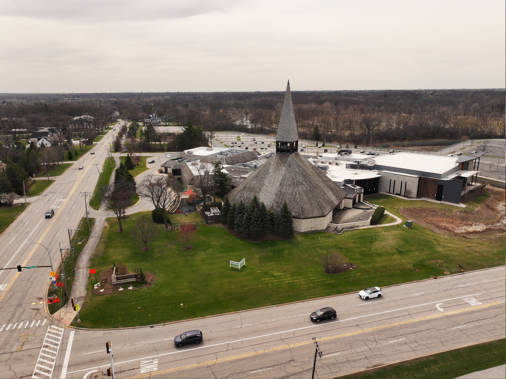
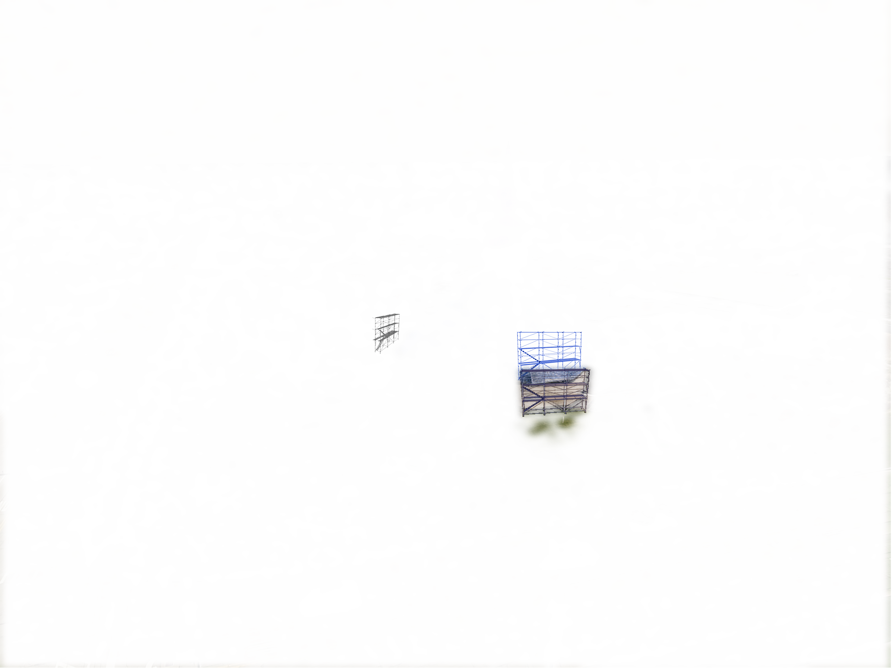
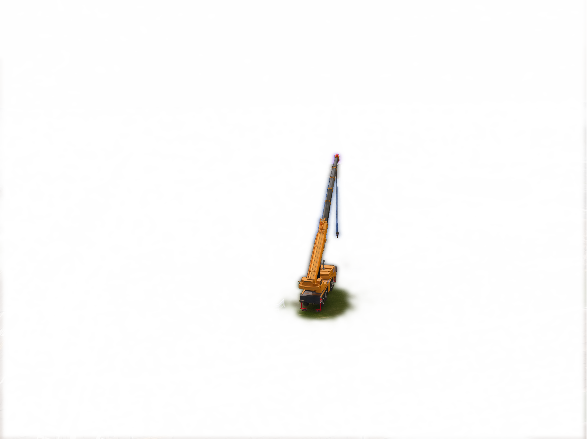
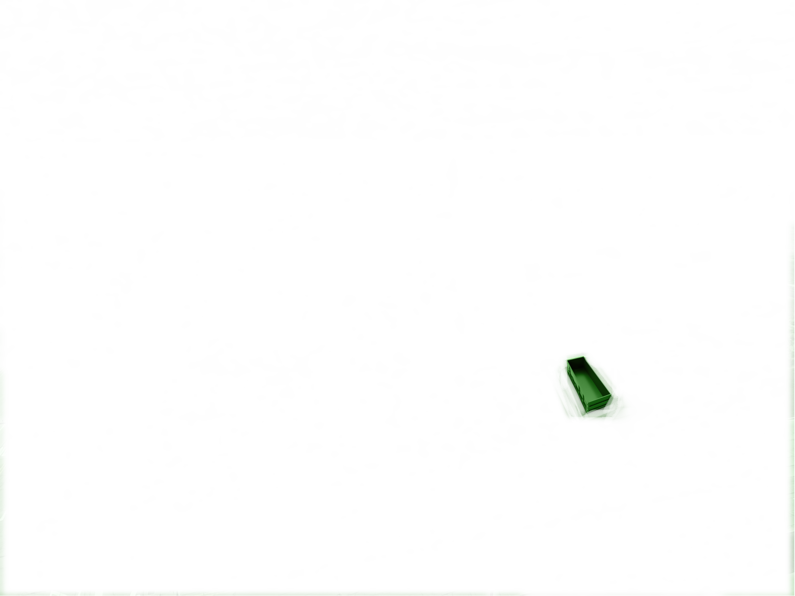
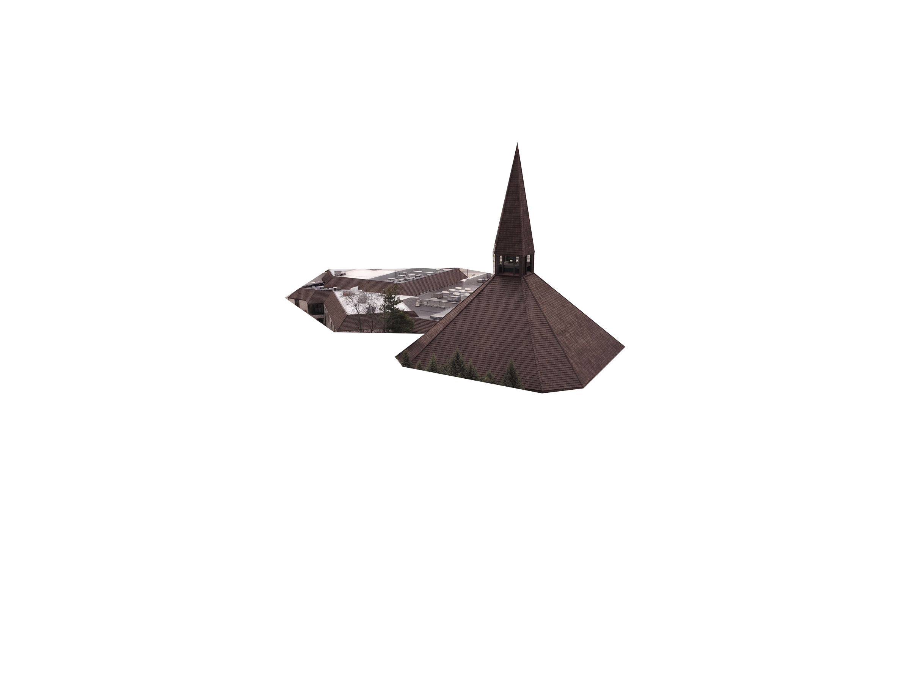

Existing view
The roof today. No work has started.
Enter the street number to view the restoration timeline.
For board members and project staff only.
July 6 — August 28, 2026. Drag the timeline, click a step, or pick a date to see what will be on site that day.





The roof today. No work has started.
Trusted partners volunteering material, equipment, and labor.
The same two materials are used across the steeple and the full sanctuary, so the entire roof reads as one piece from the ground.
A composite cedar shake with the look and grain of natural cedar. Class A fire rated, freeze/thaw stable, and warrantied for 50 years. Goes on every section of the steeple and sanctuary roof.
All drip edge, valleys, and flashings are 26-gauge Kynar-coated steel, color-matched to burnished slate. Kynar is the same finish used on modern architectural metal roofs and resists fading, chalking, and staining for decades.
Material is staged in the dedicated parking lot. From there it is moved to the flat roof. A boom truck is brought out only to lift material.
Plywood protects the stained glass during work. It comes off for services. The stained glass stays usable for Sundays.
The roof deck is inspected section by section. Any deck repairs are done before new cedar is installed on that section.
The sanctuary stays in use throughout the project. Scaffolding stays up around the sanctuary until the last section is finished.
Each link opens the source document.
All-in. Scaffolding, crane, dumpster, material, labor, and cleanup.